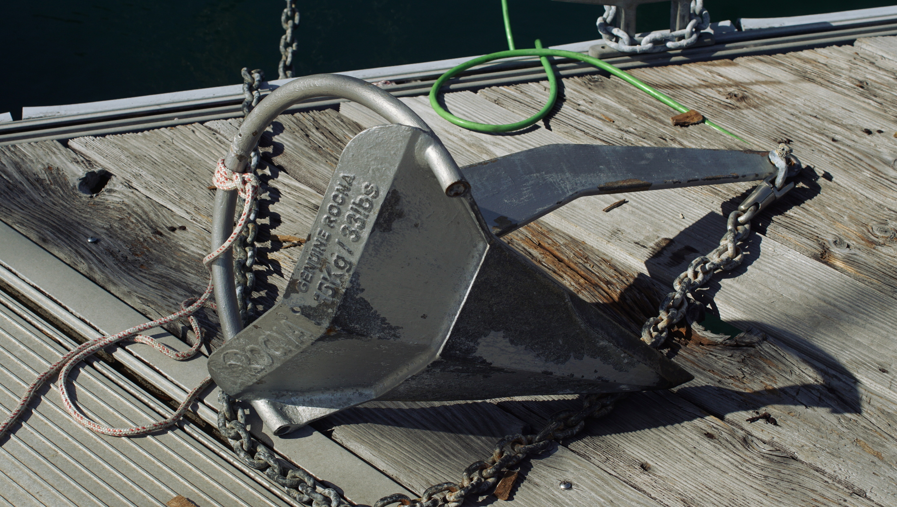

ground tackle
An offshore boat ought to house as many anchors as it can carry (pino carries 3). The ideal anchor is one that can reset with ease if the wind changes direction.
Carrying multiple anchors is useful for kedging to get yourself out of a tricky spot (if you run aground), or to keep your boat off the dock in the event of contrary swell and wind. Kedging involves taking a dinghy out with a small anchor and line in the direction you want to move the boat. The anchor is dropped some distance away, and the person in the dinghy returns to the boat. Then, the sailor pulls the boat up to the anchor, a length of rope or so at a time. It is a slow, and difficult process but it works.
Some sailors argue that a bigger anchor is better, but the quality and shape of the anchor, as well as your scope makes all the difference. If you want to upsize, your bow roller may need replacing, and in the event of windlass breakage, heaving it up by hand could be next to impossible. We have extra lengths of chain and rope.
Carry many lengths of 3-strand nylon rode, to use for kedging, or for tying up stern lines when med-mooring in ports, or to carry and tie to a point ashore to keep from swinging in busy anchorages.
Read about anchoring etiquette.